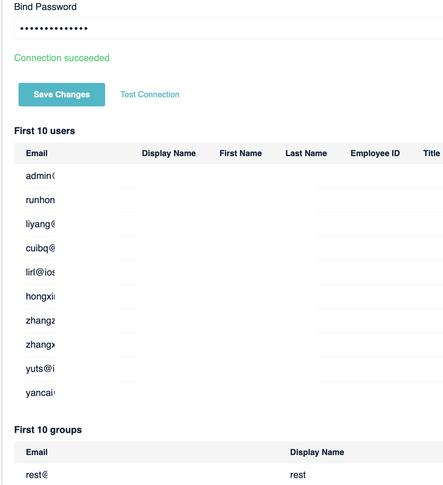

Since iRedMail Enterprise Edition v1.6.0 ("EE" for short), EE supports replicating mail accounts from a Microsoft Active Directory ("AD" for short) server.
You can setup such replication anytime after iRedMail initial setup, with any backend database (MariaDB, PostgreSQL or OpenLDAP).
You must specify a hosted email domain as target for such replication, accounts replicated from AD will be hosted under this target domain.
EE retrieves the full email addresses of accounts from specified LDAP attributes on AD server, the domain part of email address must be same as the target domain, otherwise these accounts will be ignored and not replicated.
For example, you choose to replicate mail accounts from AD to email domain
example.com which is hosted on iRedMail server, and retrieve full email
addresses of AD user accounts from LDAP attribute userPrincipalName, then
the value of userPrincipalName must be a valid email address ends with
@example.com.
Please login to EE as global admin, then click Account Resource on left
sidebar. It shows you supported server types for account replication.
Currently only AD is supported, contact us if you need to support other servers.

Click the Active Directory icon to add AD for account replication, it
will redirect to replication management page.
Replication, Users and Groups
tabs, but you may want to tune it to work with your AD server.Fill AD server related settings under Connection tab.
Replicate accounts for domain: The email domain name you'd like to
replicate for. It will search existing domains when you start typing, click
the domain name you want to replicate.Server address and port: The hostname of IP address of the AD server.Secure connection (TLS/SSL) is required: Toggle on this option if AD server
has valid ssl cert and requires secure TLS/SSL connection.Connection timeout: Timeout (in seconds) for connection to AD server.Base DN: The container which contains all user / group accounts. For example,
cn=Users,dc=xx,dc=xx.Bind DN: The full LDAP dn used to login to AD. This bind dn is used to
search all user / group accounts under base dn.Bind Password: Password of the bind dn.
After inputed all values, please click the Test connection link to
verify those parameters. If all values are correct, it will show you message
Connection succeeded, and retrieve up to 10 users and groups under the
message. You can verify the retrieved attributes.
Click Save Changes after test succeeded.

Click Replication tab:
Replication Interval: Set how often to replicate incrementally.Replicate AD groups as mail alias accounts: Replicate AD group accounts,
and create them as mail alias accounts locally.Groups will be hidden and invisible.Delete accounts locally when they were removed from Active Directory:
delete mail accounts and their application data (e.g. webmail preferences,
calendar, contacts, per-user whitelists / blacklists, etc) on iRedMail server
when they were removed from Active Directory.Click Save Changes if you made some changes.

Click Users tab:
LDAP Filter: The LDAP filter used to query against AD to find mail users.
Default is (|(objectClass=user)(objectClass=person)).Get full email address from attribute: Set the LDAP attribute name which
stores account's full email address on AD.Replicate additional user profile: Besides email address, EE
supports replicating additional user profiles from AD.Click Save Changes if you made some changes.
You may want to go back to Connection tab and click Test connection to
check the replicated user profiles.

If you enables option Replicate AD groups as mail alias accounts under
Replication tab, the Groups tab becomes visible. Click it to manage
group replication related settings.
AD group will be replicated and created as mail alias account locally, you can set default access policy.
Click Save Changes if you made some changes.
Again, you may want to go back to Connection tab and click Test connection
to check the replicated group profiles.

You can now click Account Resources on left
sidebar, it will show you all created account resources.
Edit button to manage account resource.Replicate Now to replicate immediately.Log to check replication history.Delete to delete this account resource.